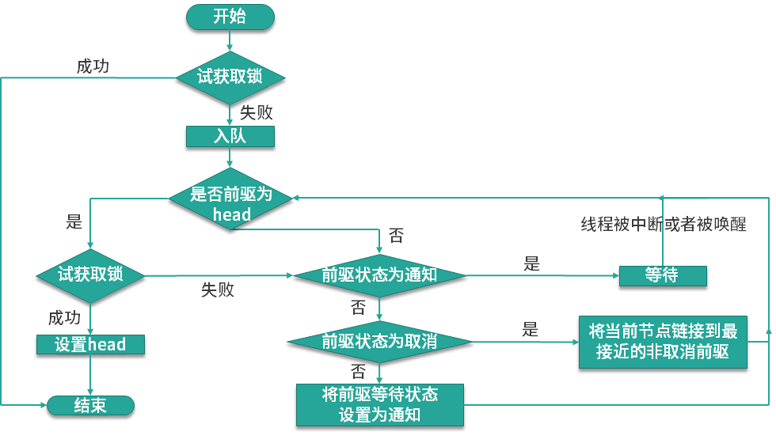

在JDK1.5之前共享对象的协调机制只有 synchronized和 volatile，在JDK1.5中增加了新的机制
ReentrantLock，该机制的诞生并不是为了替代synchronized，而是在synchronized不适用的情况下，提供一种可以选择的高级功能。
我们本课时的面试题是，synchronized和ReentrantLock是如何实现的？它们有什么区别？
典型回答
synchronized 属于独占式悲观锁，是通过JVM隐式实现的，synchronized只允许同一时刻只有一个线程操作资源。
在Java中每个对象都隐式包含一个monitor（监视器）对象，加锁的过程其实就是竞争monitor的过程，当线程进入字节码 monitorenter 指令之后，线程将持有monitor对象，执行monitorexit时释放 monitor对象，当其他线程没有拿到monitor对象时，则需要阻塞等待获取该对象。
ReentrantLock 是Lock的默认实现方式之一，它是基于AQS（Abstract Queued Synchronizer，队列同步器）实现的，它默认是通过非公平锁实现的，在它的内部有一个state的状态字段用于表示锁是否被占用，如果是0则表示锁未被占用，此时线程就可以把state改为1，并成功获得锁，而其他未获得锁的线程只能去排队等待获取锁资源。
synchronized和ReentrantLock都提供了锁的功能，具备互斥性和不可见性。在JDK1.5中
synchronized 的性能远远低于ReentrantLock，但在JDK 1.6之后synchronized的性能略低于
ReentrantLock，它的区别如下：
- synchronized是JVM隐式实现的，而ReentrantLock是Java 语言提供的APl；
- ReentrantLock 可设置为公平锁，而synchronized却不行；
- ReentrantLock 只能修饰代码块，而synchronized可以用于修饰方法、修饰代码块等；
- ReentrantLock 需要手动加锁和释放锁，如果忘记释放锁，则会造成资源被永久占用，而synchronized 无需手动释放锁；
- ReentrantLock 可以知道是否成功获得了锁，而synchronized却不行。
考点分析
synchronized 和ReentrantLock 是比线程池还要高频的面试问题，因为它包含了更多的知识点，且涉及到的知识点更加深入，对面试者的要求也更高，前面我们简要地介绍了synchronized和ReentrantLock的概念及执行原理，但很多大厂会更加深入的追问更多关于它们的实现细节，比如：
- ReentrantLock的具体实现细节是什么？
- JDK1.6时锁做了哪些优化？
知识扩展
ReentrantLock 源码分析
本课时从源码出发来解密 ReentrantLock 的具体实现细节，首先来看ReentrantLock的两个构造函数：
1 | public ReentrantLock() { |
无参的构造函数创建了一个非公平锁，用户也可以根据第二个构造函数，设置一个boolean类型的值，来决定是否使用公平锁来实现线程的调度。
公平锁VS非公平锁
公平锁的含义是线程需要按照请求的顺序来获得锁；而非公平锁则允许“插队”的情况存在，所谓的“插队”指的是，线程在发送请求的同时该锁的状态恰好变成了可用，那么此线程就可以跳过队列中所有排队的线程直接拥有该锁。
而公平锁由于有挂起和恢复所以存在一定的开销，因此性能不如非公平锁，所以ReentrantLock和synchronized 默认都是非公平锁的实现方式。
ReentrantLock 是通过lock()来获取锁，并通过unlock()释放锁，使用代码如下：
1 | Lock lock = new ReentrantLock(); |
ReentrantLock中的lock()是通过sync.lock()实现的，但Sync类中的lock()是一个抽象方法，需要子类NonfairSync或FairSync去实现，NonfairSync中的lock()源码如下：
1 | final void lock() { |
FairSync中的lock()源码如下：
1 | final void lock() { |
可以看出非公平锁比公平锁只是多了一行compareAndSetState方法，该方法是尝试将 state值由0置换为1，如果设置成功的话，则说明当前没有其他线程持有该锁，不用再去排队了，可直接占用该锁，否则，则需要通过acquire方法去排队。
acquire源码如下：
1 | public final void acquire(int arg) { |
tryAcquire 方法尝试获取锁，如果获取锁失败，则把它加入到阻塞队列中，来看tryAcquire的源码：
1 | protected final boolean tryAcquire(int acquires) { |
对于此方法来说，公平锁比非公平锁只多一行代码!hasQueuedPredecessors()，它用来查看队列中是否有比它等待时间更久的线程，如果没有，就尝试一下是否能获取到锁，如果获取成功，则标记为已经被占用。
如果获取锁失败，则调用addWaiter方法把线程包装成Node对象，同时放入到队列中，但
addWaiter 方法并不会尝试获取锁，acquireQueued方法才会尝试获取锁，如果获取失败，则此节点会被挂起，源码如下：
1 | /** |
该方法会使用for（;;）无限循环的方式来尝试获取锁，若获取失败，则调用
shouldParkAfterFailedAcquire方法，尝试挂起当前线程，源码如下：
1 | /** |
线程入列被挂起的前提条件是，前驱节点的状态为SIGNAL，SIGNAL状态的含义是后继节点处于等待状态，当前节点释放锁后将会唤醒后继节点。所以在上面这段代码中，会先判断前驱节点的状态，如果为SIGNAL，则当前线程可以被挂起并返回true；如果前驱节点的状态>0，则表示前驱节点取消了，这时候需要一直往前找，直到找到最近一个正常等待的前驱节点，然后把它作为自己的前驱节点；如果前驱节点正常（未取消），则修改前驱节点状态为SIGNAL。
到这里整个加锁的流程就已经走完了，最后的情况是，没有拿到锁的线程会在队列中被挂起，直到拥有锁的线程释放锁之后，才会去唤醒其他的线程去获取锁资源，整个运行流程如下图所示：

unlock 相比于 lock 来说就简单很多了，源码如下：
1 | public void unlock() { |
锁的释放流程为，先调用tryRelease方法尝试释放锁，如果释放成功，则查看头结点的状态是否为
SIGNAL，如果是，则唤醒头结点的下个节点关联的线程；如果释放锁失败，则返回false。
tryRelease源码如下：
1 | /** |
在tryRelease方法中，会先判断当前的线程是不是占用锁的线程，如果不是的话，则会抛出异常；如果是的话，则先计算锁的状态值 getState()-releases是否为0，如果为0，则表示可以正常的释放锁，然后清空独占的线程，最后会更新锁的状态并返回执行结果。
JDK1.6锁优化
自适应自旋锁
JDK1.5在升级为JDK1.6时，HotSpot 虚拟机团队在锁的优化上下了很大功夫，比如实现了自适应式自旋锁、锁升级等。
JDK 1.6引入了自适应式自旋锁意味着自旋的时间不再是固定的时间了，比如在同一个锁对象上，如果通过自旋等待成功获取了锁，那么虚拟机就会认为，它下一次很有可能也会成功（通过自旋获取到锁，因此允许自旋等待的时间会相对的比较长，而当某个锁通过自旋很少成功获得过锁，那么以后在获取该锁时，可能会直接忽略掉自旋的过程，以避免浪费CPU的资源，这就是自适应自旋锁的功能。
锁升级
锁升级其实就是从偏向锁到轻量级锁再到重量级锁升级的过程，这是JDK1.6提供的优化功能，也称之为锁膨胀。
偏向锁是指在无竞争的情况下设置的一种锁状态。偏向锁的意思是它会偏向于第一个获取它的线程，当锁对象第一次被获取到之后，会在此对象头中设置标示为“01”，表示偏向锁的模式，并且在对象头中记录此线程的ID，这种情况下，如果是持有偏向锁的线程每次在进入的话，不再进行任何同步操作，如Locking、Unlocking等，直到另一个线程尝试获取此锁的时候，偏向锁模式才会结束，偏向锁可以提高带有同步但无竞争的程序性能。但如果在多数锁总会被不同的线程访问时，偏向锁模式就比较多余了，此时可以通过-XX:-UseBiasedLocking来禁用偏向锁以提高性能。
轻量锁是相对于重量锁而言的，在JDK1.6之前，synchronized是通过操作系统的互斥量（mutex lock）来实现的，这种实现方式需要在用户态和核心态之间做转换，有很大的性能消耗，这种传统实现锁的方式被称之为重量锁。
而轻量锁是通过比较并交换（CAS，Compare and Swap）来实现的，它对比的是线程和对象的
Mark Word（对象头中的一个区域），如果更新成功则表示当前线程成功拥有此锁；如果失败，虚拟机会先检查对象的Mark Word是否指向当前线程的栈帧，如果是，则说明当前线程已经拥有此锁，否则，则说明此锁已经被其他线程占用了。当两个以上的线程争抢此锁时，轻量级锁就膨胀为重量级锁，这就是锁升级的过程，也是JDK1.6锁优化的内容。
小结
本课时首先讲了synchronized和ReentrantLock的实现过程，然后讲了 synchronized和ReentrantLock 的区别，最后通过源码的方式讲了ReentrantLock加锁和解锁的执行流程。接着又讲了JDK1.6中的锁优化，包括自适应式自旋锁的实现过程，以及synchronized的三种锁状态和锁升级的执行流程。
synchronized刚开始为偏向锁，随着锁竞争越来越激烈，会升级为轻量级锁和重量级锁。如果大多数锁被不同的线程所争抢就不建议使用偏向锁了。